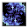

眠りの霧 Dream Dust
英語版 CrawlWiki の記事「Dream Dust」(0.34 向け、2026-07-12 版)の翻訳です。原文の著者は編集履歴をご覧ください。
|  眠りの霧 | |
|---|---|
| 詠唱の騒音 | 3 |
| 呪文の騒音 | 0 |
| 射程 | 視界(LOS) |
| フラグ | モンスター専用(Monster)、対象指定(Target) |

| 眠りを誘う夢の粉で対象を圧倒し、魅惑的な光景を見せて眠らせる。眠りの羊が他にもいると、この効果の強さと持続時間が増す。 |
眠りの霧は眠りの羊だけが使うモンスター専用の呪文で、対象を眠らせる。使うのに対象が見えている必要はない(つまり、透明になっていても眠らされることがある)。抵抗はできるが、意志力での判定ではない。そのかわり、視界に入ってくる眠りの羊が増えるほど抵抗しにくくなる。眠りの羊が眠っていても、石化していても、麻痺していても、成功率には数として加わる。
プレイヤーがアンデッド(グール、ミイラ、血の通っていない吸血鬼)か非生物(ガーゴイル、ジンニー、石像、嵐化、霧化)なら、睡眠は効かない。バーサークしているときや明晰を持っているときも効かない。
| 羊の 数 |
抵抗 確率 |
持続時間 (ターン) |
|---|---|---|
| 1 | 96% | 5～7 |
| 2 | 48% | 5～10 |
| 3 | 32% | 5～12 |
| 4 | 24% | 5～15 |
| 5 | 19% | 5～17 |
| 6 | 16% | 5～20 |
| 7+ | < 14% | 5～20 |
眠りの霧を唱える敵は次のとおり。